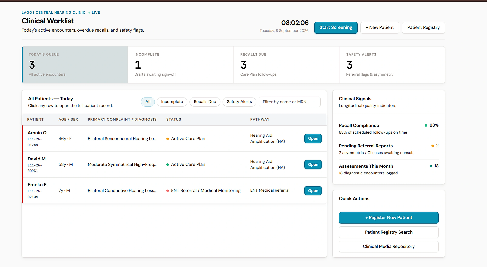
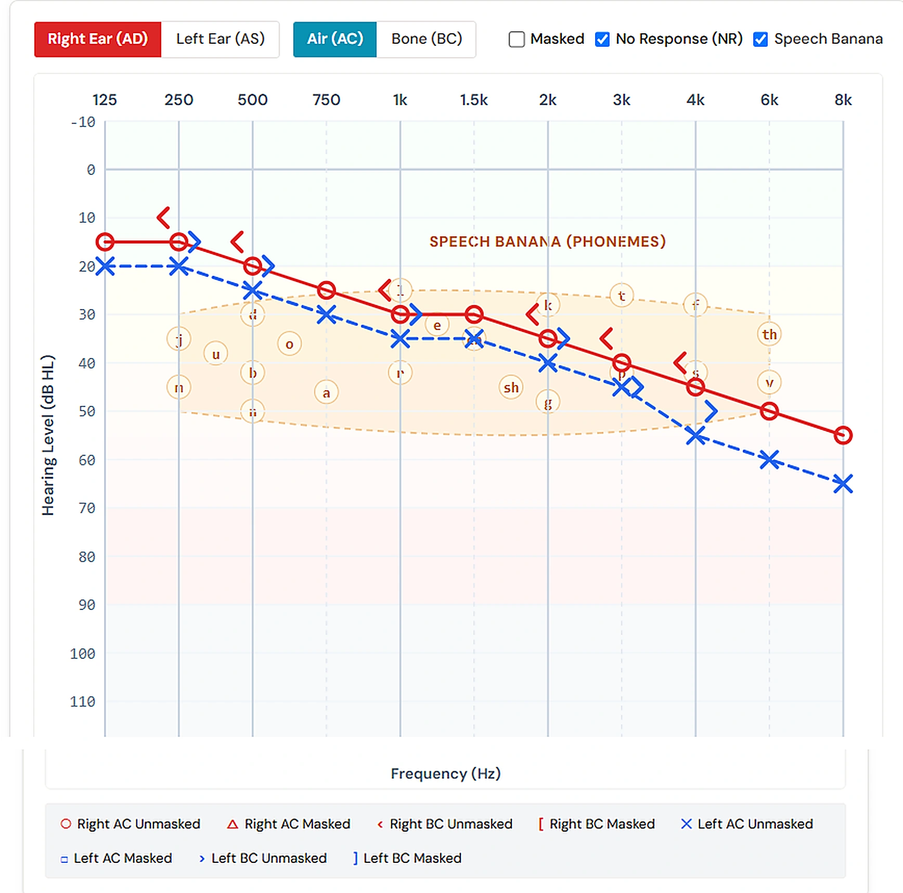
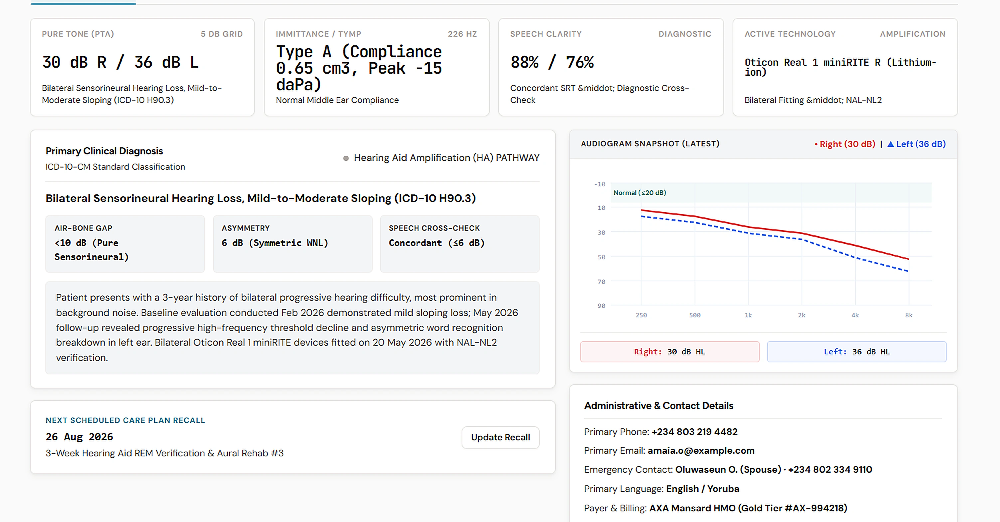

Clinical Practice Management
The clinical operating system for hearing healthcare.
Clinical PMS is a comprehensive practice management system purpose-built for hearing care providers. Structured clinical records, longitudinal patient history, and streamlined daily practice workflows.
Manage patient intake, diagnostic evaluations, clinical documentation, and longitudinal care plans in one focused platform.

34M+
people in Africa live with disabling hearing loss
Most of them will never receive a structured clinical assessment. Not because hearing care practitioners don't exist — but because the clinical tools that should support them are fragmented, paper-based, or non-existent. There is a critical need for modern, accessible digital infrastructure to support day-to-day clinical care and patient tracking.
Clinical PMS provides that missing foundation: a dedicated clinical workspace that organizes patient records, diagnostic findings, and longitudinal care across encounters.
Clinical Workspace
A complete clinical workspace for hearing care.
Every tool a hearing care specialist needs — patient management, diagnostic evaluations, clinical documentation, and practice administration — in a single, structured system built for clinical workflows.
Request a Demo
Diagnostic workspace — clinical threshold curves, bone conduction, and masking evaluations.
Longitudinal Tracking
Track patient hearing health across encounters over time.
Maintain complete clinical context across appointments. Review prior visits, monitor threshold shifts, and manage recall schedules with structured longitudinal patient records.
Request a Demo
Patient records — structured longitudinal history, appointment tracking, and encounter management.
Practice Capabilities
Built for clinical clarity and practice efficiency.
Clinical PMS brings patient history, diagnostic findings, and clinical documentation into a unified, structured workflow.
Structured Clinical Records
Organized hearing care records make patient findings easy to record, review, and navigate across every visit in a consistent, standardized format.
Longitudinal History
Keep full clinical context across months and years, making it straightforward to compare prior visits, track progression, and monitor changes over time.
Consistent Documentation
Standardized clinical notes, care plans, and diagnostic records ensure high quality and clear documentation throughout your practice.
Streamlined Practice Workflow
Manage patient intake, active clinical encounters, and follow-up care from a single, responsive interface built specifically for clinical teams.
Better Clinical Decisions
Comprehensive diagnostic records and organized history give practitioners the clear context needed for informed, confident clinical care.
Pricing
Simple plans. No surprises.
Pricing is confirmed at onboarding. All current figures are TBD — we will not display placeholder numbers as if they were confirmed.
Solo Practitioner
For individual audiologists and private practitioners.
- Full Clinical PMS workspace
- Patient directory and records
- All diagnostic assessment modules
- Clinical reporting
- Longitudinal encounter history
Clinics & Hearing Centers
For small-to-medium audiology facilities and hearing centers.
- Everything in Solo
- Multi-staff accounts
- Role-based access control
- Consent-gated cross-facility sharing
- Priority support
Hospital-Based Audiology
For hospital audiology departments and larger institutional buyers.
- Everything in Clinic
- Institutional onboarding support
- Advanced audit and reporting
- Departmental clinical reporting
- Dedicated account management
Enterprise & Health Networks
For multi-location practices, health systems, and healthcare organizations requiring custom deployment and centralized governance.
- Multi-location clinic management
- Custom deployment and data integration
- Centralized administrative oversight
- Dedicated account management and SLA
This tier represents large-scale clinical and institutional deployments. Engagement, scope, and governance are agreed directly — not through self-service onboarding.
Request a DemoRequest a Demo
See Clinical PMS in the context of your practice.
Every conversation starts with understanding your facility, your workflow, and what you're trying to solve. We'll show you the parts of Clinical PMS that are relevant to your practice.
This form is the single entry point for all clinic demos, practice inquiries, and enterprise deployments.
Request received.
We will be in touch within two business days. Thank you for reaching out.